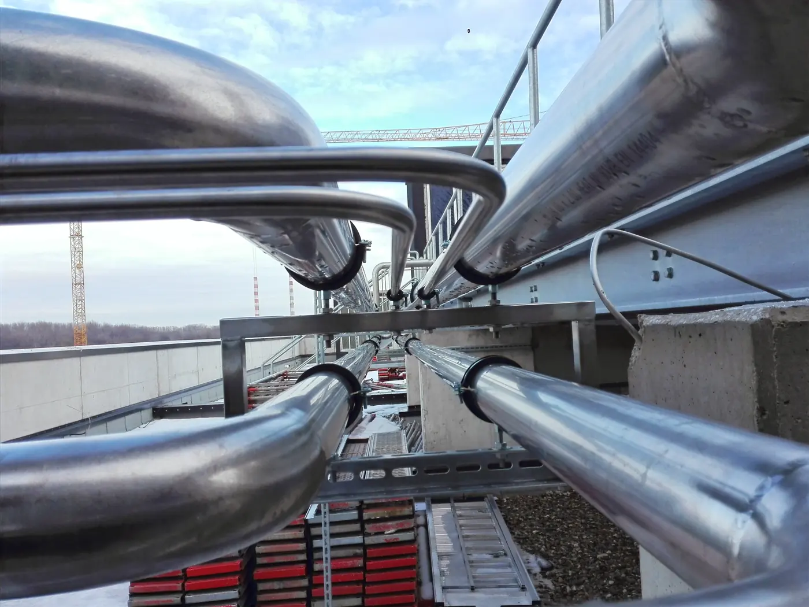
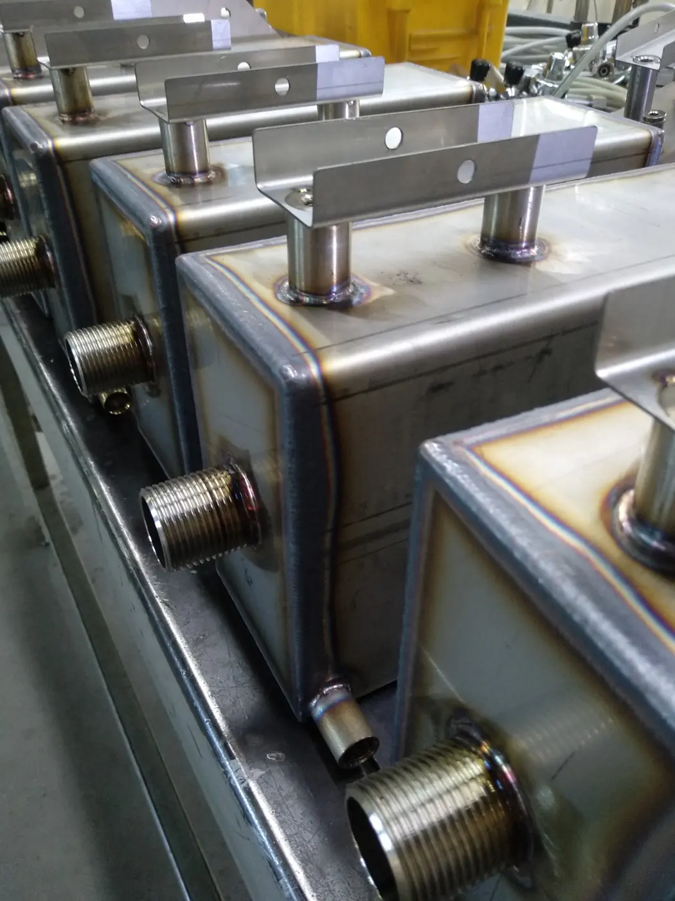
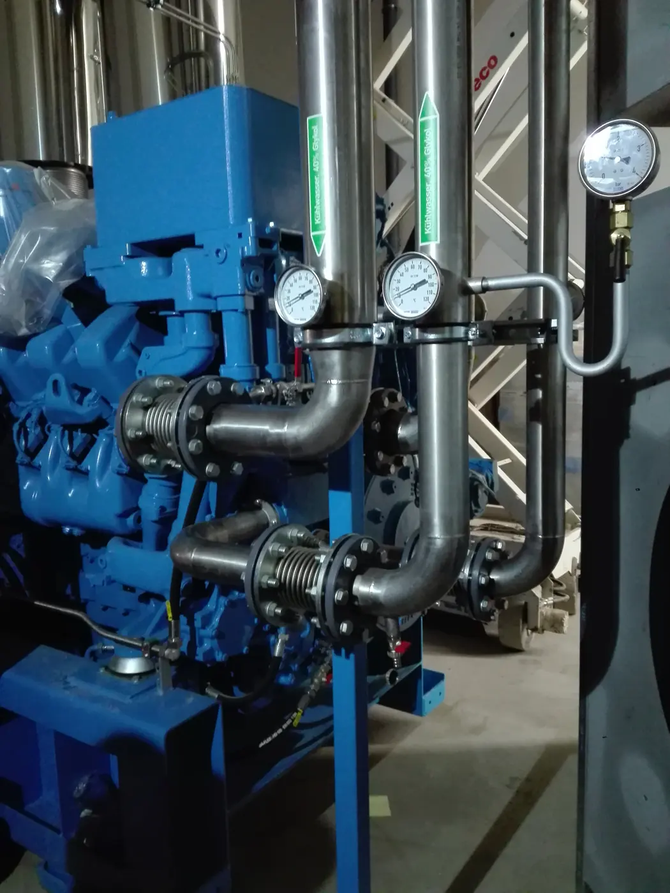
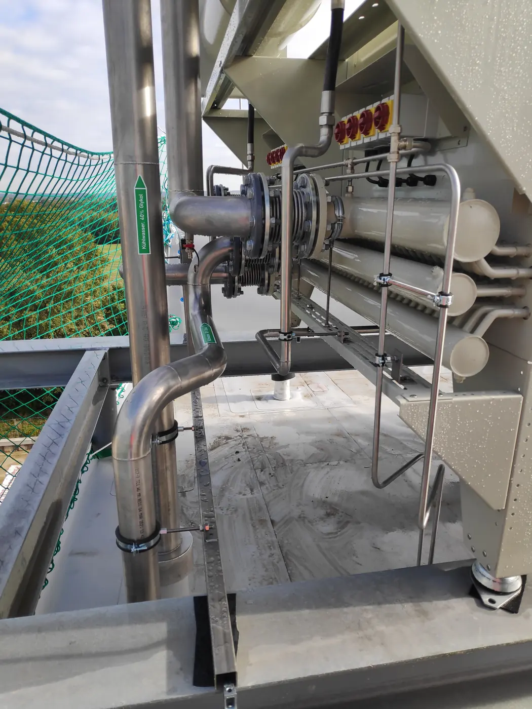
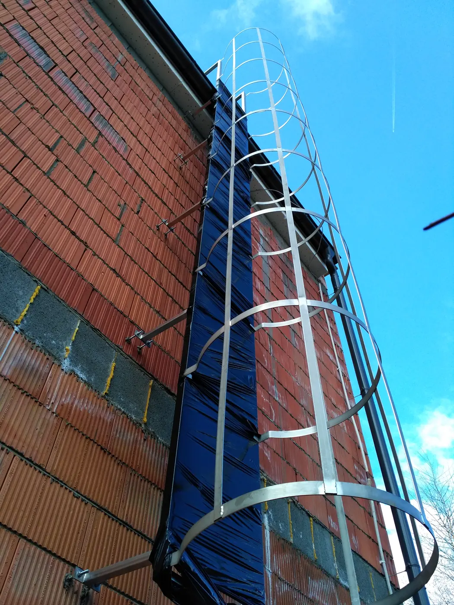
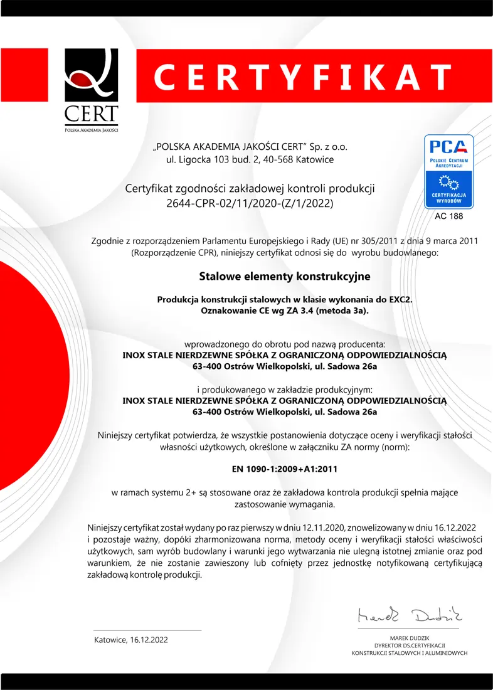
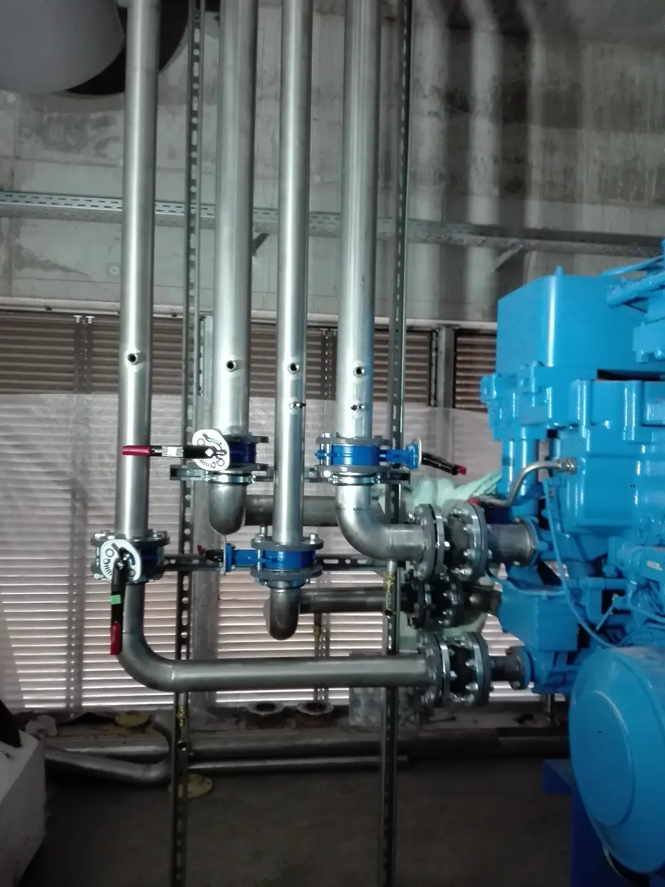

Strona główna / Dla firm
Wykonawstwo przemysłowe ze stali nierdzewnej
Rurociągi technologiczne, drabiny do zbiorników, pomosty i konstrukcje wsporcze. Wykonujemy i modernizujemy instalacje małej i średniej wielkości. Przyjmujemy też małe zlecenia.
Certyfikat produkcji konstrukcji stalowych, atesty materiałowe

Dla jakich branż pracujemy
Instalacje wykonujemy w stali nierdzewnej w gatunku 304, 316 lub innym wskazanym przez klienta. Inżynierowie ściśle współpracują z naszą ekipą wykonawczą, więc rysunek i wykonanie są w jednych rękach.
Przemysł spożywczy
Rurociągi i elementy w wykonaniu nierdzewnym i kwasoodpornym.
Farmacja
Instalacje w gatunku 316 lub wskazanym w specyfikacji.
Budownictwo
Balustrady, barierki, schody i pomosty robocze.
Woda procesowa i ścieki
Montaż i modernizacja instalacji wody procesowej i ściekowej.
Chłodnictwo
Instalacje wody chłodniczej.
Sprężone powietrze
Instalacje sprężonego powietrza ze stali nierdzewnej.
Maszyny i linie
Konstrukcje wsporcze do maszyn i urządzeń, części maszyn.
Zbiorniki
Drabiny do zbiorników, podesty, zbiorniczki.
Zakres prac
Projektujemy, sprowadzamy materiały, wykonujemy i wysyłamy. Realizujemy zamówienia seryjne i pojedyncze zlecenia, w stałej lub czasowej współpracy.

Prefabrykacja
Warsztatowo, według otrzymanych rysunków i projektów elementów konstrukcyjnych i instalacyjnych.

Modernizacja
Wymiana instalacji i elementów ze stali czarnej na układy nierdzewne i kwasoodporne.

Montaż
Instalacje wody procesowej, chłodniczej i ściekowej, sprężonego powietrza, rurociągi technologiczne.

Drabiny i konstrukcje
Dostawa i montaż drabin, pomostów, schodów, balustrad i konstrukcji wsporczych.
Technologia i formalności
Spawamy w osłonie argonu, metodą TIG albo laserem FIBER, w zależności od elementu. Materiał kupujemy u sprawdzonych dostawców.
- TIG i laser FIBERSpawanie w osłonie argonu, także na obrotnicy.
- Próba szczelnościSprawdzamy szczelność, gdy wymaga tego instalacja.
- Cięcie i wycinanie laseroweCięcie także pod kątem, przecinarki taśmowe z chłodzeniem.
- Inżynierowie i ekipa w jednej firmieŚciśle współpracują ze sobą, od rysunku po montaż.

Posiadamy stosowne certyfikaty i wystawiamy atesty materiałowe.
Certyfikat zakładowej kontroli produkcji konstrukcji stalowych, w wersji polskiej, angielskiej i niemieckiej.

Wybrane realizacje
Kliknij zdjęcie, żeby je powiększyć.
Zapytanie ofertowe
Prześlij rysunek, specyfikację albo opis. Wycenimy prefabrykację, montaż lub modernizację.
- 519 172 174
- mariusz.maciejewski@inox.com.pl
- INOX Stale Nierdzewne Sp. z o.o.
ul. Sadowa 26A, 63-400 Ostrów Wielkopolski